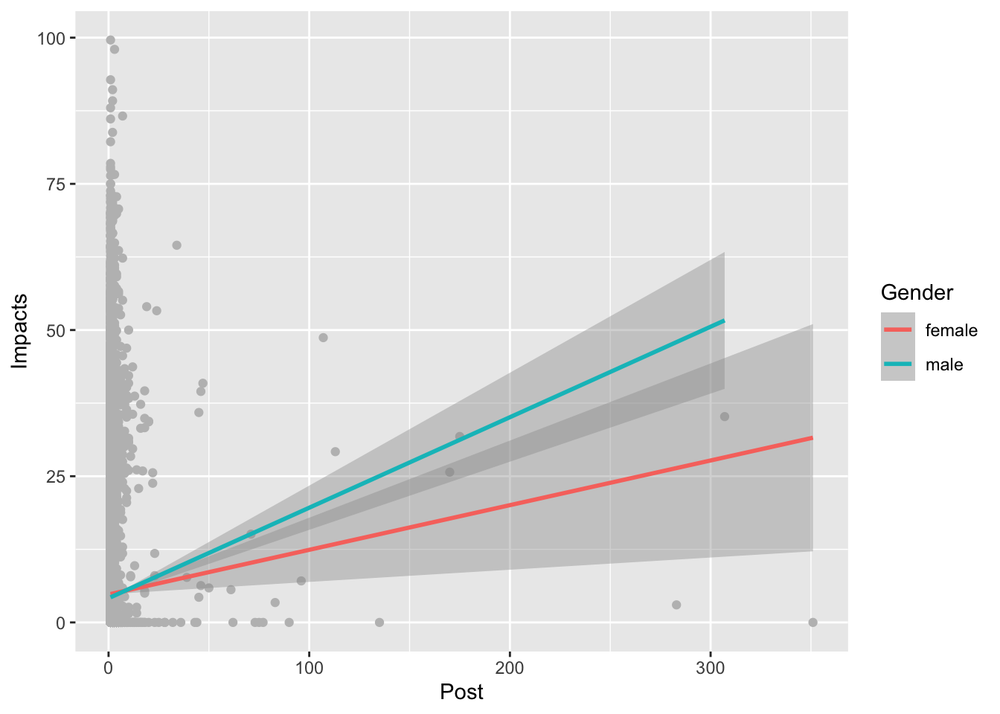
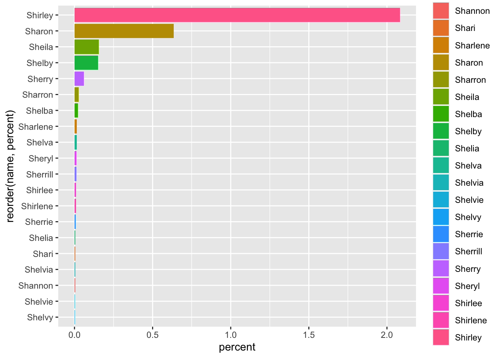
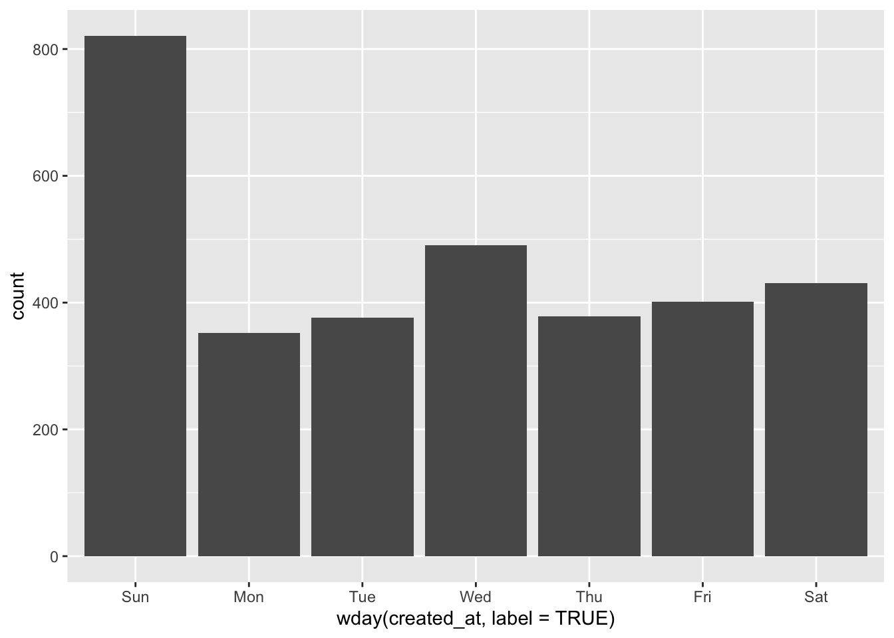
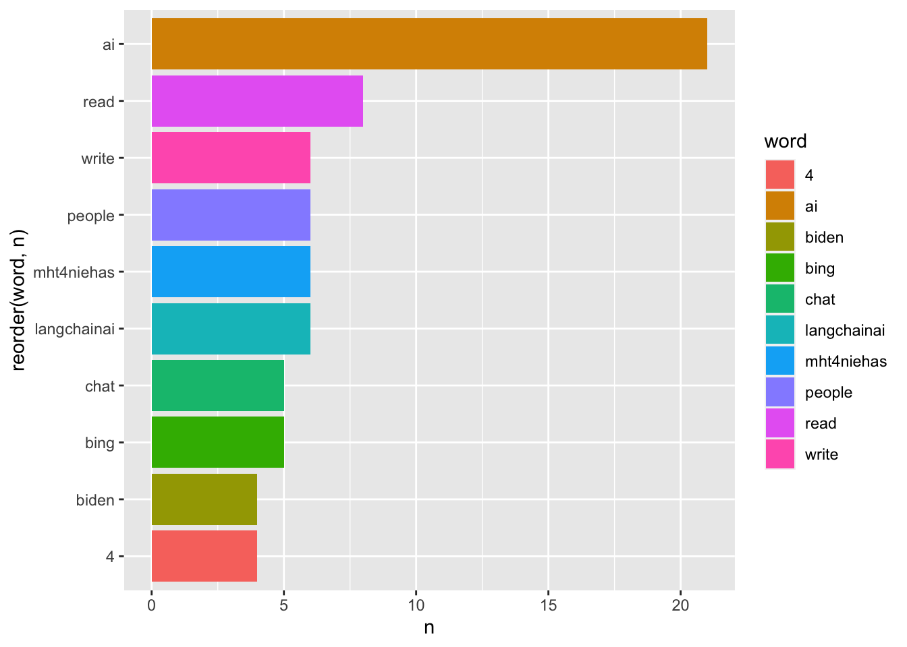

Chapter 6 Text Analysis
6.1 An Introduction to Stringr
library(babynames)
library(tidyverse)
library(tidytext)
library(textdata)Stringr is a package in the tidyverse that deals with, well, strings. What are strings? Anything in your data frame that is text- or character-based. So, in the case of babynames, that’d be Name and Sex - Year, Prop and N are not strings.
Stringr allows for string manipulation across your entire dataset. If, for instance, we had a column of character data that repeatedly mis-spelled a name: Bryan instead of Brian, say - stringr could change every instance of Bryan into Brian in one line of code.
Let’s start playing around with stringr by creating a variable that is equal to a string:
library(stringr)
sentence <- c("hello", "this is a long sentence", NA)-
How many characters are there in the string?
str_length(sentence)## [1] 5 23 NA -
Let’s replace every instance of ‘l’ with ‘x’
str_replace(sentence, "l", "X")## [1] "heXlo" "this is a Xong sentence" ## [3] NAOkay, now let’s create a new string that is a list of character strings:
list <- c("Apple", "Banana", "Pear")Let’s use str_sub to ‘pull out’ the first character of the string:
str_sub(list, 1,1)## [1] "A" "B" "P"What just happened? We told R to only grab the first character. Can we grab the first three characters?
str_sub(list, 1,3)## [1] "App" "Ban" "Pea"Let’s adjust the string’s content so each fruit is written entirely in lower case:
str_to_lower(str_sub(list))## [1] "apple" "banana" "pear"We can also use stringr to detect specific words or phrases:
str_detect(list, "Pear")## [1] FALSE FALSE TRUER returns the position of “Pear” in the list.
6.1.1 Practical Applications of Stringr
Let’s apply more Stringr concepts to a body of text. Where could we find text? How would we get text into R?
One way would be a ‘web scrape’ - programmatically grabbing all the relevant text off of a page, or a series of pages - think Amazon product reviews.
Another would be to import a body of text, like a .txt file, into R, and then break it up into individual words - more on this in the next chapter.
A third way would be to use data included in an R package. More commonly, packages give you access to online datasets too large to download (Spotify, The New York Times, etc.). This technique, of selectively downloading relevant data from a much larger, online database, is the basis for the concept of an ‘API.’ [Application Programming Interface, if you’re wondering.] Many websites also use APIs, with downloadable files for analysis.
So as to avoid any complication, let’s hold off on accessing an API until we cover Twitter, and continue to use the babynames dataset for now; then we can move on to analyzing lyrics, political speeches, and great works of literature.
A snippet of Base R here, rather than the tidyverse: if we want to specify a column in our dataset, we write the name of the dataset or variable, then the dollar sign, then the name of the column:
babynames$name## [1] "Mary" "Anna" "Emma" "Elizabeth" "Minnie" ## [6] "Margaret" "Ida" "Alice" "Bertha" "Sarah" ## [11] "Annie" "Clara" "Ella" "Florence" "Cora" ## [16] "Martha" "Laura" "Nellie" "Grace" "Carrie" ## [21] "Maude" "Mabel" "Bessie" "Jennie" "Gertrude" ## [26] "Julia" "Hattie" "Edith" "Mattie" "Rose" ## [31] "Catherine" "Lillian" "Ada" "Lillie" "Helen" ## [36] "Jessie" "Louise" "Ethel" "Lula" "Myrtle" ## [41] "Eva" "Frances" "Lena" "Lucy" "Edna" ## [46] "Maggie" "Pearl" "Daisy" "Fannie" "Josephine" ## [51] "Dora" "Rosa" "Katherine" "Agnes" "Marie" ## [56] "Nora" "May" "Mamie" "Blanche" "Stella" ## [61] "Ellen" "Nancy" "Effie" "Sallie" "Nettie" ## [66] "Della" "Lizzie" "Flora" "Susie" "Maud" ## [71] "Mae" "Etta" "Harriet" "Sadie" "Caroline" ## [76] "Katie" "Lydia" "Elsie" "Kate" "Susan" ## [81] "Mollie" "Alma" "Addie" "Georgia" "Eliza" ## [86] "Lulu" "Nannie" "Lottie" "Amanda" "Belle" ## [91] "Charlotte" "Rebecca" "Ruth" "Viola" "Olive" ## [96] "Amelia" "Hannah" "Jane" "Virginia" "Emily" ## [101] "Matilda" "Irene" "Kathryn" "Esther" "Willie" ## [106] "Henrietta" "Ollie" "Amy" "Rachel" "Sara" ## [111] "Estella" "Theresa" "Augusta" "Ora" "Pauline" ## [116] "Josie" "Lola" "Sophia" "Leona" "Anne" ## [121] "Mildred" "Ann" "Beulah" "Callie" "Lou" ## [126] "Delia" "Eleanor" "Barbara" "Iva" "Louisa" ## [131] "Maria" "Mayme" "Evelyn" "Estelle" "Nina" ## [136] "Betty" "Marion" "Bettie" "Dorothy" "Luella" ## [141] "Inez" "Lela" "Rosie" "Allie" "Millie" ## [146] "Janie" "Cornelia" "Victoria" "Ruby" "Winifred" ## [151] "Alta" "Celia" "Christine" "Beatrice" "Birdie" ## [156] "Harriett" "Mable" "Myra" "Sophie" "Tillie" ## [161] "Isabel" "Sylvia" "Carolyn" "Isabelle" "Leila" ## [166] "Sally" "Ina" "Essie" "Bertie" "Nell" ## [171] "Alberta" "Katharine" "Lora" "Rena" "Mina" ## [176] "Rhoda" "Mathilda" "Abbie" "Eula" "Dollie" ## [181] "Hettie" "Eunice" "Fanny" "Ola" "Lenora" ## [186] "Adelaide" "Christina" "Lelia" "Nelle" "Sue" ## [191] "Johanna" "Lilly" "Lucinda" "Minerva" "Lettie" ## [196] "Roxie" "Cynthia" "Helena" "Hilda" "Hulda" ## [201] "Bernice" "Genevieve" "Jean" "Cordelia" "Marian" ## [206] "Francis" "Jeanette" "Adeline" "Gussie" "Leah" ## [211] "Lois" "Lura" "Mittie" "Hallie" "Isabella" ## [216] "Olga" "Phoebe" "Teresa" "Hester" "Lida" ## [221] "Lina" "Winnie" "Claudia" "Marguerite" "Vera" ## [226] "Cecelia" "Bess" "Emilie" "John" "Rosetta" ## [231] "Verna" "Myrtie" "Cecilia" "Elva" "Olivia" ## [236] "Ophelia" "Georgie" "Elnora" "Violet" "Adele" ## [241] "Lily" "Linnie" "Loretta" "Madge" "Polly" ## [246] "Virgie" "Eugenia" "Lucile" "Lucille" "Mabelle" ## [251] "Rosalie" "Kittie" "Meta" "Angie" "Dessie" ## [256] "Georgiana" "Lila" "Regina" "Selma" "Wilhelmina" ## [261] "Bridget" "Lilla" "Malinda" "Vina" "Freda" ## [266] "Gertie" "Jeannette" "Louella" "Mandy" "Roberta" ## [271] "Cassie" "Corinne" "Ivy" "Melissa" "Lyda" ## [276] "Naomi" "Norma" "Bell" "Margie" "Nona" ## [281] "Zella" "Dovie" "Elvira" "Erma" "Irma" ## [286] "Leota" "William" "Artie" "Blanch" "Charity" ## [291] "Lorena" "Lucretia" "Orpha" "Alvina" "Annette" ## [296] "Catharine" "Elma" "Geneva" "Janet" "Lee" ## [301] "Leora" "Lona" "Miriam" "Zora" "Linda" ## [306] "Octavia" "Sudie" "Zula" "Adella" "Alpha" ## [311] "Frieda" "George" "Joanna" "Leonora" "Priscilla" ## [316] "Tennie" "Angeline" "Docia" "Ettie" "Flossie" ## [321] "Hanna" "Letha" "Minta" "Retta" "Rosella" ## [326] "Adah" "Berta" "Elisabeth" "Elise" "Goldie" ## [331] "Leola" "Margret" "Adaline" "Floy" "Idella" ## [336] "Juanita" "Lenna" "Lucie" "Missouri" "Nola" ## [341] "Zoe" "Eda" "Isabell" "James" "Julie" ## [346] "Letitia" "Madeline" "Malissa" "Mariah" "Pattie" ## [351] "Vivian" "Almeda" "Aurelia" "Claire" "Dolly" ## [356] "Hazel" "Jannie" "Kathleen" "Kathrine" "Lavinia" ## [361] "Marietta" "Melvina" "Ona" "Pinkie" "Samantha" ## [366] "Susanna" "Chloe" "Donnie" "Elsa" "Gladys" ## [371] "Matie" "Pearle" "Vesta" "Vinnie" "Antoinette" ## [376] "Clementine" "Edythe" "Harriette" "Libbie" "Lilian" ## [381] "Lue" "Lutie" "Magdalena" "Meda" "Rita" ## [386] "Tena" "Zelma" "Adelia" "Annetta" "Antonia" ## [391] "Dona" "Elizebeth" "Georgianna" "Gracie" "Iona" ## [396] "Lessie" "Leta" "Liza" "Mertie" "Molly" ## [401] "Neva" "Oma" "Alida" "Alva" "Cecile" ## [406] "Cleo" "Donna" "Ellie" "Ernestine" "Evie" ## [411] "Frankie" "Helene" "Minna" "Myrta" "Prudence" ## [416] "Queen" "Rilla" "Savannah" "Tessie" "Tina" ## [421] "Agatha" "America" "Anita" "Arminta" "Dorothea" ## [426] "Ira" "Luvenia" "Marjorie" "Maybelle" "Mellie" ## [431] "Nan" "Pearlie" "Sidney" "Velma" "Clare" ## [436] "Constance" "Dixie" "Ila" "Iola" "Jimmie" ## [441] "Louvenia" "Lucia" "Ludie" "Luna" "Metta" ## [446] "Patsy" "Phebe" "Sophronia" "Adda" "Avis" ## [451] "Betsy" "Bonnie" "Cecil" "Cordie" "Emmaline" ## [456] "Ethelyn" "Hortense" "June" "Louie" "Lovie" ## [461] "Marcella" "Melinda" "Mona" "Odessa" "Veronica" ## [466] "Aimee" "Annabel" "Ava" "Bella" "Carolina" ## [471] "Cathrine" "Christena" "Clyde" "Dena" "Dolores" ## [476] "Eleanore" "Elmira" "Fay" "Frank" "Jenny" ## [481] "Kizzie" "Lonnie" "Loula" "Magdalene" "Mettie" ## [486] "Mintie" "Peggy" "Reba" "Serena" "Vida" ## [491] "Zada" "Abigail" "Celestine" "Celina" "Claudie" ## [496] "Clemmie" "Connie" "Daisie" "Deborah" "Dessa" ## [501] "Easter" "Eddie" "Emelia" "Emmie" "Imogene" ## [506] "India" "Jeanne" "Joan" "Lenore" "Liddie" ## [511] "Lotta" "Mame" "Nevada" "Rachael" "Robert" ## [516] "Sina" "Willa" "Aline" "Beryl" "Charles" ## [521] "Daisey" "Dorcas" "Edmonia" "Effa" "Eldora" ## [526] "Eloise" "Emmer" "Era" "Gena" "Henry" ## [531] "Iris" "Izora" "Lennie" "Lissie" "Mallie" ## [536] "Malvina" "Mathilde" "Mazie" "Queenie" "Rosina" ## [541] "Salome" "Theodora" "Therese" "Vena" "Wanda" ## [546] "Wilda" "Altha" "Anastasia" "Besse" "Bird" ## [551] "Birtie" "Clarissa" "Claude" "Delilah" "Diana" ## [556] "Emelie" "Erna" "Fern" "Florida" "Frona" ## [561] "Hilma" "Joseph" "Juliet" "Leonie" "Lugenia" ## [566] "Mammie" "Manda" "Manerva" "Manie" "Nella" ## [571] "Paulina" "Philomena" "Rae" "Selina" "Sena" ## [576] "Theodosia" "Tommie" "Una" "Vernie" "Adela" ## [581] "Althea" "Amalia" "Amber" "Angelina" "Annabelle" ## [586] "Anner" "Arie" "Clarice" "Corda" "Corrie" ## [591] "Dell" "Dellar" "Donie" "Doris" "Elda" ## [596] "Elinor" "Emeline" "Emilia" "Esta" "Estell" ## [601] "Etha" "Fred" "Hope" "Indiana" "Ione" ## [606] "Jettie" "Johnnie" "Josiephine" "Kitty" "Lavina" ## [611] "Leda" "Letta" "Mahala" "Marcia" "Margarette" ## [616] "Maudie" "Maye" "Norah" "Oda" "Patty" ## [621] "Paula" "Permelia" "Rosalia" "Roxanna" "Sula" ## [626] "Vada" "Winnifred" "Adline" "Almira" "Alvena" ## [631] "Arizona" "Becky" "Bennie" "Bernadette" "Camille" ## [636] "Cordia" "Corine" "Dicie" "Dove" "Drusilla" ## [641] "Elena" "Elenora" "Elmina" "Ethyl" "Evalyn" ## [646] "Evelina" "Faye" "Huldah" "Idell" "Inga" ## [651] "Irena" "Jewell" "Kattie" "Lavenia" "Leslie" ## [656] "Lovina" "Lulie" "Magnolia" "Margeret" "Margery" ## [661] "Media" "Millicent" "Nena" "Ocie" "Orilla" ## [666] "Osie" "Pansy" "Ray" "Rosia" "Rowena" ## [671] "Shirley" "Tabitha" "Thomas" "Verdie" "Walter" ## [676] "Zetta" "Zoa" "Zona" "Albertina" "Albina" ## [681] "Alyce" "Amie" "Angela" "Annis" "Carol" ## [686] "Carra" "Clarence" "Clarinda" "Delphia" "Dillie" ## [691] "Doshie" "Drucilla" "Etna" "Eugenie" "Eulalia" ## [696] "Eve" "Felicia" "Florance" "Fronie" "Geraldine" ## [701] "Gina" "Glenna" "Grayce" "Hedwig" "Jessica" ## [706] "Jossie" "Katheryn" "Katy" "Lea" "Leanna" ## [711] "Leitha" "Leone" "Lidie" "Loma" "Lular" ## [716] "Magdalen" "Maymie" "Minervia" "Muriel" "Neppie" ## [721] "Olie" "Onie" "Osa" "Otelia" "Paralee" ## [726] "Patience" "Rella" "Rillie" "Rosanna" "Theo" ## [731] "Tilda" "Tishie" "Tressa" "Viva" "Yetta" ## [736] "Zena" "Zola" "Abby" "Aileen" "Alba" ## [741] "Alda" "Alla" "Alverta" "Ara" "Ardelia" ## [746] "Ardella" "Arrie" "Arvilla" "Augustine" "Aurora" ## [751] "Bama" "Bena" "Byrd" "Calla" "Camilla" ## [756] "Carey" "Carlotta" "Celestia" "Cherry" "Cinda" ## [761] "Classie" "Claudine" "Clemie" "Clifford" "Clyda" ## [766] "Creola" "Debbie" "Dee" "Dinah" "Doshia" ## [771] "Ednah" "Edyth" "Eleanora" "Electa" "Eola" ## [776] "Erie" "Eudora" "Euphemia" "Evalena" "Evaline" ## [781] "Faith" "Fidelia" "Freddie" "Golda" "Harry" ## [786] "Helma" "Hermine" "Hessie" "Ivah" "Janette" ## [791] "Jennette" "Joella" "Kathryne" "Lacy" "Lanie" ## [796] "Lauretta" "Leana" "Leatha" "Leo" "Liller" ## [801] "Lillis" "Louetta" "Madie" "Mai" "Martina" ## [806] "Maryann" "Melva" "Mena" "Mercedes" "Merle" ## [811] "Mima" "Minda" "Monica" "Nealie" "Netta" ## [816] "Nolia" "Nonie" "Odelia" "Ottilie" "Phyllis" ## [821] "Robbie" "Sabina" "Sada" "Sammie" "Suzanne" ## [826] "Sybilla" "Thea" "Tressie" "Vallie" "Venie" ## [831] "Viney" "Wilhelmine" "Winona" "Zelda" "Zilpha" ## [836] "Adelle" "Adina" "Adrienne" "Albertine" "Alys" ## [841] "Ana" "Araminta" "Arthur" "Birtha" "Bulah" ## [846] "Caddie" "Celie" "Charlotta" "Clair" "Concepcion" ## [851] "Cordella" "Corrine" "Delila" "Delphine" "Dosha" ## [856] "Edgar" "Elaine" "Elisa" "Ellar" "Elmire" ## [861] "Elvina" "Ena" "Estie" "Etter" "Fronnie" ## [866] "Genie" "Georgina" "Glenn" "Gracia" "Guadalupe" ## [871] "Gwendolyn" "Hassie" "Honora" "Icy" "Isa" ## [876] "Isadora" "Jesse" "Jewel" "Joe" "Johannah" ## [881] "Juana" "Judith" "Judy" "Junie" "Lavonia" ## [886] "Lella" "Lemma" "Letty" "Linna" "Littie" ## [891] "Lollie" "Lorene" "Louis" "Love" "Lovisa" ## [896] "Lucina" "Lynn" "Madora" "Mahalia" "Manervia" ## [901] "Manuela" "Margarett" "Margaretta" "Margarita" "Marilla" ## [906] "Mignon" "Mozella" "Natalie" "Nelia" "Nolie" ## [911] "Omie" "Opal" "Ossie" "Ottie" "Ottilia" ## [916] "Parthenia" "Penelope" "Pinkey" "Pollie" "Rennie" ## [921] "Reta" "Roena" "Rosalee" "Roseanna" "Ruthie" ## [926] "Sabra" "Sannie" "Selena" "Sibyl" "Tella" ## [931] "Tempie" "Tennessee" "Teressa" "Texas" "Theda" ## [936] "Thelma" "Thursa" "Ula" "Vannie" "Verona" ## [941] "Vertie" "Wilma" "John" "William" "James" ## [946] "Charles" "George" "Frank" "Joseph" "Thomas" ## [951] "Henry" "Robert" "Edward" "Harry" "Walter" ## [956] "Arthur" "Fred" "Albert" "Samuel" "David" ## [961] "Louis" "Joe" "Charlie" "Clarence" "Richard" ## [966] "Andrew" "Daniel" "Ernest" "Will" "Jesse" ## [971] "Oscar" "Lewis" "Peter" "Benjamin" "Frederick" ## [976] "Willie" "Alfred" "Sam" "Roy" "Herbert" ## [981] "Jacob" "Tom" "Elmer" "Carl" "Lee" ## [986] "Howard" "Martin" "Michael" "Bert" "Herman" ## [991] "Jim" "Francis" "Harvey" "Earl" "Eugene" ## [996] "Ralph" "Ed" "Claude" "Edwin" "Ben" ## [ reached getOption("max.print") -- omitted 1923665 entries ]Let’s use str_detect() to find all of the names that include a ‘sh’ sound:
As you see, str_detect() runs as a boolean operator, in that it ascribes a TRUE or FALSE value for each entry in the column, based on our conditional statement: is there a ‘sh’ in the character string?
Let’s combine our previous experience with ggplot to write a long, complicated set of code that will visualize the most popular names starting in ‘Sh’ for women born in 1938:
babynames %>% filter(str_detect(name, "Sh") & sex=="F" & year == 1938) %>% arrange(desc(prop)) %>% head(20) %>% ggplot(aes(reorder(name,prop),prop, fill = name)) + geom_col() + coord_flip()
Let’s fancy that up a bit, by calculating a ‘percentage’ of use of that name per year / per gender:
babynames %>% filter(str_detect(name, "Sh") & sex=="F" & year == 1938) %>% arrange(desc(prop)) %>% head(20) %>% mutate(percent = (prop * 100)) %>% ggplot(aes(reorder(name,percent),percent, fill = name)) + geom_col() + coord_flip()
how many ‘z’ names since 2000?
babynames %>% filter(year > 2000 & str_detect(name, "Z")) %>% arrange(desc(prop))## # A tibble: 13,018 × 5 ## year sex name n prop ## <dbl> <chr> <chr> <int> <dbl> ## 1 2001 M Zachary 18186 0.00880 ## 2 2002 M Zachary 16622 0.00805 ## 3 2003 M Zachary 15539 0.00740 ## 4 2004 M Zachary 13711 0.00649 ## 5 2005 M Zachary 12283 0.00578 ## 6 2006 M Zachary 11005 0.00502 ## 7 2007 M Zachary 10212 0.00461 ## 8 2008 M Zachary 9226 0.00424 ## 9 2012 F Zoey 7466 0.00386 ## 10 2009 M Zachary 8078 0.00381 ## # … with 13,008 more rowsWhy did R only pull out the names starting with Z? Because we capitalized it. How do we get both?
babynames %>% mutate(Z = str_count(babynames$name, "[zZ]")) %>% arrange(desc(prop))## # A tibble: 1,924,665 × 6 ## year sex name n prop Z ## <dbl> <chr> <chr> <int> <dbl> <int> ## 1 1880 M John 9655 0.0815 0 ## 2 1881 M John 8769 0.0810 0 ## 3 1880 M William 9532 0.0805 0 ## 4 1883 M John 8894 0.0791 0 ## 5 1881 M William 8524 0.0787 0 ## 6 1882 M John 9557 0.0783 0 ## 7 1884 M John 9388 0.0765 0 ## 8 1882 M William 9298 0.0762 0 ## 9 1886 M John 9026 0.0758 0 ## 10 1885 M John 8756 0.0755 0 ## # … with 1,924,655 more rowsInstead of arranging our data by name popularity, let’s look at the names with the most z’s in them:
babynames %>% mutate(Z = str_count(babynames$name, "[zZ]")) %>% arrange(desc(Z))## # A tibble: 1,924,665 × 6 ## year sex name n prop Z ## <dbl> <chr> <chr> <int> <dbl> <int> ## 1 2010 M Zzyzx 5 0.00000244 3 ## 2 1880 F Lizzie 388 0.00398 2 ## 3 1880 F Kizzie 13 0.000133 2 ## 4 1881 F Lizzie 396 0.00401 2 ## 5 1881 F Kizzie 9 0.0000910 2 ## 6 1882 F Lizzie 495 0.00428 2 ## 7 1882 F Kizzie 9 0.0000778 2 ## 8 1882 F Dezzie 5 0.0000432 2 ## 9 1883 F Lizzie 496 0.00413 2 ## 10 1883 F Kizzie 14 0.000117 2 ## # … with 1,924,655 more rowsWhat if, instead of specifying a particular letter, we just wanted to count the most frequent first letters in names?
babynames %>% mutate(first_letter = substr(name, 1,1)) -> baby_lettersLet’s plot that:
baby_letters %>% count(first_letter, sort = TRUE) %>% ggplot(aes(reorder(first_letter, n),n)) + geom_col() + coord_flip()
We can also use stringr to calculate the length of all of our strings. What is the frequency of the shortest and longest names?
babynames %>% mutate(length = str_length(name)) -> babynames_length6.1.2 Average name length over time
Now, if we want to see the average length of a names over time, the code gets a little mroe advanced - note the mean function we haven’t used like this before:
babynames_length %>% group_by(year) %>% summarise_at(vars(length), funs(mean(.))) %>% ggplot(aes(year, length)) + geom_line()
The results are impressive. Let’s split them up by Sex:
babynames_length %>% group_by(year, sex) %>% summarise_at(vars(length), funs(mean(.))) %>% ggplot(aes(year, length, color = sex)) + geom_line()
6.1.3 Common issue: (example: most common 3-letter names)
As mentioned in the last Chapter, summarise() is confusing. In the case of babynames, you’ll know to use it when you keep getting the same results over and over, and you want to group those names together. Let’s take a look at this issue by calculating the most common 3-letter names:
babynames_length %>% filter(length == 3) %>% arrange(desc(prop))## # A tibble: 41,274 × 6 ## year sex name n prop length ## <dbl> <chr> <chr> <int> <dbl> <int> ## 1 1975 F Amy 32252 0.0207 3 ## 2 1976 F Amy 31341 0.0199 3 ## 3 1974 F Amy 29564 0.0189 3 ## 4 1973 F Amy 26964 0.0174 3 ## 5 1977 F Amy 26731 0.0163 3 ## 6 1972 F Amy 25873 0.0160 3 ## 7 1880 F Ida 1472 0.0151 3 ## 8 1971 F Amy 26238 0.0150 3 ## 9 1881 F Ida 1439 0.0146 3 ## 10 1882 F Ida 1673 0.0145 3 ## # … with 41,264 more rowsWe get a lot of repeated names. Time to summarize!
babynames_length %>% filter(length == 3) %>% group_by(name) %>% summarise(total = sum(n) ) %>% arrange(desc(total))## # A tibble: 970 × 2 ## name total ## <chr> <int> ## 1 Amy 692096 ## 2 Ann 469710 ## 3 Joe 462099 ## 4 Roy 407020 ## 5 Lee 292891 ## 6 Eva 263741 ## 7 Ava 251052 ## 8 Ian 222950 ## 9 Mia 216774 ## 10 Kim 214365 ## # … with 960 more rowsLet’s try that again, with 2-letter names:
babynames_length %>% filter(length == 2) %>% group_by(name) %>% summarize(total = sum(n)) %>% arrange(desc(total))## # A tibble: 149 × 2 ## name total ## <chr> <int> ## 1 Jo 180579 ## 2 Ty 45278 ## 3 Ed 26330 ## 4 Al 17221 ## 5 Bo 10856 ## 6 Lu 4013 ## 7 Cy 3418 ## 8 Wm 2737 ## 9 Kc 2585 ## 10 An 2048 ## # … with 139 more rowsWhat is the longest name?
babynames_length %>% arrange(desc(length))## # A tibble: 1,924,665 × 6 ## year sex name n prop length ## <dbl> <chr> <chr> <int> <dbl> <int> ## 1 1978 M Christophermich 5 0.00000293 15 ## 2 1979 M Johnchristopher 5 0.00000279 15 ## 3 1980 M Christophermich 7 0.00000377 15 ## 4 1980 M Christopherjohn 5 0.0000027 15 ## 5 1981 F Mariadelrosario 5 0.0000028 15 ## 6 1981 M Christopherjohn 5 0.00000268 15 ## 7 1982 F Mariadelosangel 6 0.00000331 15 ## 8 1982 M Christopherjohn 6 0.00000318 15 ## 9 1982 M Christophermich 5 0.00000265 15 ## 10 1983 M Christopherjohn 8 0.00000429 15 ## # … with 1,924,655 more rowsHow many 15 letter names are there?
babynames_length %>% filter(length == 15) %>% count(name, sort = TRUE)## # A tibble: 34 × 2 ## name n ## <chr> <int> ## 1 Christopherjohn 19 ## 2 Johnchristopher 17 ## 3 Christopherjame 16 ## 4 Franciscojavier 16 ## 5 Christophermich 8 ## 6 Ryanchristopher 7 ## 7 Christianjoseph 4 ## 8 Christopherjose 4 ## 9 Jonathanmichael 4 ## 10 Mariadelosangel 4 ## # … with 24 more rowsLet’s plot those names:
babynames %>% filter(name %in% c("Christopherjohn","Johnchristopher","Christopherjame","Franciscojavier", "Christophermich", "Ryanchristopher","Christianjoseph", "Christopherjose", "Jonathanmichael", "Mariadelosangel" )) %>% ggplot(aes(year, prop, color = name)) + geom_line()
By the look of these names, it’s clear that most of them are actually longer than 15 characters - but 15 characters is the cut-off point for the column. Thus, we cannot accurately estimate the most common 15-letter names.
Along similar lines, an analysis of the methodology behind babynames shows that only names that have at least 5 instances in a given year are recorded. So it’d be similarly futile for us to attempt to measure the rarest names, as they are excluded in the database. (It also helps clarify why some rarer names seem to ‘disappear’ in certain years.)
OK, what else can stringr do?
How about the average number of vowels per name?
str_count(babynames$name, "[aeiou]")## [1] 1 1 1 3 3 3 1 2 2 2 2 2 1 3 2 2 3 3 2 3 3 2 3 3 3 3 3 1 3 2 4 3 1 3 2 ## [36] 3 4 1 2 1 1 2 2 1 1 3 2 2 3 4 2 2 4 1 3 2 1 3 2 2 1 1 2 3 3 2 3 2 3 2 ## [71] 2 1 3 3 4 3 2 2 2 2 3 1 2 4 2 2 3 3 2 2 3 3 1 3 2 3 2 2 4 1 3 2 1 1 3 ## [106] 4 2 0 2 2 2 3 3 1 4 3 2 3 3 1 2 0 3 3 2 3 3 3 1 4 3 2 1 2 2 1 3 3 2 3 ## [141] 1 2 3 2 3 3 4 4 1 3 1 3 3 4 3 3 2 1 3 3 2 2 2 3 3 1 1 2 3 1 2 4 2 2 2 ## [176] 2 3 2 2 3 3 3 1 1 3 4 3 3 2 2 3 1 3 3 3 3 2 3 2 2 3 5 2 4 3 2 4 3 3 2 ## [211] 2 2 3 3 3 1 3 3 2 2 2 3 4 5 2 4 1 3 1 3 2 2 4 1 3 3 4 2 3 2 1 3 3 2 1 ## [246] 3 4 3 3 3 4 3 2 2 3 5 2 3 2 4 2 2 3 2 2 3 4 4 1 3 3 3 0 3 1 3 2 1 3 2 ## [281] 2 3 2 1 1 3 3 2 1 2 3 4 1 2 2 4 1 3 2 2 3 2 3 2 2 3 3 2 2 1 3 3 3 4 3 ## [316] 3 3 3 2 3 2 2 2 2 3 1 2 3 2 3 3 2 3 1 2 4 2 3 4 2 2 1 2 2 3 4 4 3 3 3 ## [351] 3 2 4 3 1 2 3 3 3 4 4 3 1 3 3 3 2 3 1 1 3 3 2 3 4 4 1 4 3 3 2 3 4 2 2 ## [386] 2 2 3 2 3 2 3 5 3 2 3 2 2 3 1 2 1 2 1 3 2 2 2 3 2 3 3 2 1 3 3 2 3 3 2 ## [421] 2 3 2 2 4 1 4 4 3 3 1 4 2 2 2 3 3 1 2 3 5 3 3 2 2 1 2 4 1 1 1 3 2 3 3 ## [456] 1 3 2 4 3 3 3 2 2 4 3 2 1 2 4 3 3 1 2 3 4 2 1 1 1 3 3 3 4 3 3 1 2 3 2 ## [491] 2 3 4 3 4 3 3 4 3 2 2 2 3 2 3 2 3 2 3 3 2 2 3 3 2 2 2 2 1 2 3 2 3 1 2 ## [526] 3 1 1 2 1 1 2 3 3 3 3 3 3 5 3 3 4 3 2 2 2 1 4 2 1 3 3 3 3 3 3 1 1 3 2 ## [561] 2 2 3 4 4 3 2 3 3 2 4 4 2 3 2 5 3 1 3 2 2 3 1 3 3 1 2 3 2 3 1 2 3 2 1 ## [596] 2 3 3 1 1 1 1 2 3 2 3 3 5 1 3 2 2 3 3 4 4 2 2 1 1 3 4 4 3 2 2 3 2 2 2 ## [631] 3 1 3 4 3 3 3 3 2 3 2 3 2 0 1 3 2 2 1 1 2 2 3 4 3 3 3 4 3 2 3 3 2 2 2 ## [666] 2 1 1 3 3 2 3 2 3 2 2 2 2 3 2 1 2 2 1 2 2 3 3 3 3 3 3 1 4 4 1 4 3 3 4 ## [701] 2 2 2 2 3 3 2 1 2 3 3 3 3 2 2 3 3 4 3 3 2 2 1 3 4 4 2 3 3 2 2 3 2 2 2 ## [736] 2 2 0 3 1 1 1 2 1 3 2 2 2 4 3 2 2 0 2 3 2 3 4 1 2 3 4 3 2 1 3 3 2 2 3 ## [771] 1 0 4 2 2 2 3 4 3 3 2 4 3 2 1 2 3 3 1 3 3 3 2 1 3 4 3 3 2 2 2 4 3 2 3 ## [806] 2 2 2 3 2 2 2 3 4 2 3 3 3 3 1 3 3 2 3 3 2 2 3 3 3 2 4 3 2 2 2 2 3 3 0 ## [841] 1 3 1 2 2 3 3 3 2 4 3 3 3 3 2 1 3 2 1 2 2 1 2 1 3 3 4 1 3 5 2 3 3 0 1 ## [876] 3 2 2 2 3 3 2 1 3 4 2 2 1 2 3 3 3 3 2 3 3 0 3 4 4 4 3 4 4 3 2 3 4 3 3 ## [911] 2 1 2 2 3 4 4 2 3 3 2 3 4 4 3 2 3 3 1 2 3 4 3 2 2 2 2 1 3 3 3 2 1 3 2 ## [946] 2 3 1 2 2 1 2 1 1 2 1 1 1 3 2 3 2 3 3 2 1 3 1 1 2 1 2 2 3 3 3 1 1 1 2 ## [981] 2 1 1 1 2 2 2 3 1 2 1 2 2 1 3 1 0 3 1 1 ## [ reached getOption("max.print") -- omitted 1923665 entries ]That’s a lot of numbers. Let’s calculate a mean value instead:
mean(str_count(babynames$name, "[aeiou]"))## [1] 2.420695How about consonants?
mean(str_count(babynames$name, "[bcdfghjklmnpqrstvwxyz]"))## [1] 2.752322Example ideas for further exploration:
How many names contain ‘liz’ in them?
babynames %>% filter(str_detect(babynames$name, "liz") ) %>% count(name, sort = TRUE) %>% head(20) %>% ggplot(aes(reorder(name, n),n)) + geom_col() + coord_flip()
Case Study: Born Without A (Proper) Name
There are a number of names in the database that are totally anonymous. When, and why?
babynames %>% filter(name %in% c("Unknown", "Unnamed", "Infant", "Infantof", "Notnamed", "Baby")) %>% ggplot(aes(year, prop, color = name)) + geom_line() + facet_wrap(~sex)
Let’s compare this to the number of unique names per year:
babynames %>% group_by(year) %>% summarize(annual = n_distinct(name)) %>% ggplot(aes(year, annual )) + geom_line()Babynames also includes a data set called births, that simply lists out the total number of births per year:
data(births) ggplot(births, aes(year, births)) + geom_line()Why are these last two graphs different? Because the first is counting names, the second is counting births. And most babies have names that are shared with other babies, especially in the same year.